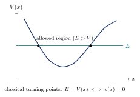
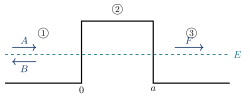
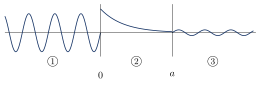
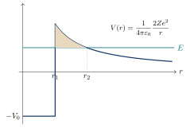
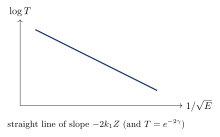
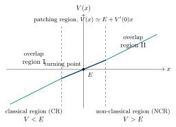
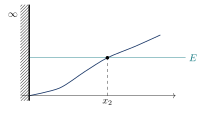
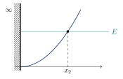

Download this chapter (PDF) Full notes (PDF)
30 The WKB Approximation¶
30.1 Idea and Setting¶
The WKB (Wentzel, Kramers, Brillouin) approximation is applicable to one-dimensional systems. Start from the 1D Schrödinger equation
Constant potential (\(E>V\), bound-state-type problem): with \(\kappa^2 = (E-V)\dfrac{2m}{\hbar^2}\) we have \(\dfrac{d^2\psi}{dx^2} = -\kappa^2\psi\) and
Classically forbidden region (\(E<V\), scattering problem): \(\psi(x) = A\,e^{\pm\chi x}\) with \(\chi = \dfrac1\hbar\sqrt{2m(V-E)}\), and \(1/\chi\) is the length scale of the decay.
For a potential that varies slowly compared with the wavelength \(\lambda\), the logic of WKB is: rapid oscillations modulated by a gradual variation of the amplitude and of the phase. The approximation breaks down at \(E=V\), the classical turning points, where \(p(x)=0\).

With the classical momentum
30.2 Derivation for \(E>V\) (Classically Allowed Region)¶
Try \(\psi(x) = A(x)\,e^{i\phi(x)}\) with real \(A\) and \(\phi\). Then
Substituting into \(\psi'' = -\frac{p^2}{\hbar^2}\psi\) and cancelling \(e^{i\phi}\):
Equating the real and the imaginary parts:
Multiplying (ii) by \(A\) gives \(2AA'\phi' + A^2\phi'' = (A^2\phi')' = 0\), so \(A^2\phi' = c^2\) is constant:
For a slowly varying potential assume \(A''\approx0\). Equation (i) then becomes \((\phi')^2 = p^2/\hbar^2\), i.e. \(\dfrac{d\phi}{dx} = \pm\dfrac p\hbar\):
WKB Wavefunction
Allowed region (\(E>V\)):
Forbidden region (\(E<V\), \(|p| = \sqrt{2m(V-E)}\)):
The probability of finding the particle at \(x\) is inversely proportional to its momentum, exactly as in classical mechanics (it spends more time where it moves slowly). WKB is therefore also called the semi-classical approximation.
Intuition
The phase \(\frac1\hbar\int p\,dx\) is the accumulated de Broglie phase (the local wave number times distance); the amplitude \(1/\sqrt p\) keeps the probability flux \(\propto|\psi|^2p\) constant.
Study Note (validity)
From (i), \(A''/A = (\phi')^2 - p^2/\hbar^2\). Dropping \(A''\) is justified if \(|A''/A|\ll p^2/\hbar^2\), which for \(A\propto p^{-1/2}\) amounts to the de Broglie wavelength \(\lambda_{dB}=2\pi\hbar/p\) changing little over one wavelength, \(|d\lambda_{dB}/dx|\ll1\), i.e. \(\hbar|p'|\ll p^2\). This fails at the turning points (\(p\to0\)), where the WKB wavefunction blows up as \(1/\sqrt p\); the connection formulas of Section 30.6 repair this.
Memory Rule
Allowed region: oscillating with phase \(\frac1\hbar\int p\,dx\). Forbidden region: real exponential with \(\frac1\hbar\int|p|\,dx\). Both carry the prefactor \(1/\sqrt{|p|}\).
30.3 Bound States: Particle in a Well with a Slowly Varying Floor¶
Example: Infinite Well with a Non-Constant Bottom
Inside the well \(E>V(x)\) and, since the solution may be written with real functions,
with \(\phi(0)=0\). Boundary conditions: \(\psi(0)=0\Rightarrow C_2=0\), so \(\psi(x) = \frac{C_1}{\sqrt{p(x)}}\sin\phi(x)\); and \(\psi(a)=0\Rightarrow\sin\phi(a)=0\), i.e. \(\phi(a)=n\pi\) \((n=1,2,\ldots)\):
Check with \(V(x)=0\): \(p=\sqrt{2mE}\) is constant, so \(\sqrt{2mE}\,a = n\pi\hbar\) and
which is exact.
Study Note
The rule \(\int p\,dx = n\pi\hbar\) for two hard walls is the Bohr–Sommerfeld condition: the phase accumulated across the well equals \(n\pi\), so that a half-integer number of wavelengths fits.
30.4 Tunneling¶
Example: Tunneling Through a Barrier
A particle with energy \(E\) is incident from the left on a barrier occupying \(0<x<a\), where \(V>E\).

Region 1 (\(x<0\)): \(\psi(x) = Ae^{ikx}+Be^{-ikx}\), with \(k=\sqrt{2mE/\hbar^2}\). Region 3 (\(x>a\)): \(\psi(x) = Fe^{ikx}\). The transmission probability is
Region 2 (tunneling region, \(0<x\le a\)):

Only the decaying exponential is attached to the outgoing wave, so the amplitude ratio is controlled by the decay across the barrier,
WKB Tunneling Probability
Intuition
\(e^{-\gamma}\) is the amplitude suppression, accumulated slice by slice, across the barrier of the decay rate \(|p|/\hbar\). The result is reliable in its exponent when \(\gamma\gg1\) (a thick or high barrier); the \(O(1)\) prefactor is ignored.
30.5 Application: \(\alpha\)-Decay (Gamow)¶
Let \(Ze\) be the nuclear charge (of the daughter nucleus) and \(2e\) the charge of the \(\alpha\) particle (He\(^{2+}\)). For example \(^{239}_{\ 94}\text{Pu}\to{}^{235}_{\ 92}\text{U}+{}^{4}_{2}\text{He}\).

The \(\alpha\) particle with energy \(E\) sits in the attractive nuclear well (\(r<r_1\)) and must tunnel through the Coulomb barrier from \(r_1\) to the exit point \(r_2\), where
Substitute \(r = r_2\sin^2u\) (see the completed integral below) to get the final answer
Gamow Exponent
For \(r_1\ll r_2\):
Eliminating \(r_2 = 2Ze^2/(4\pi\varepsilon_0E)\) in terms of \(E\):
Here \(m\) is the mass of the \(\alpha\) particle.
\(\alpha\)-Decay (continued): Completed Integral and Lifetime
Complete Solution (the integral)
With \(r=r_2\sin^2u\), \(dr = 2r_2\sin u\cos u\,du\) and \(\sqrt{r_2/r-1}=\cot u\):
which equals \(r_2\big(\frac\pi2-u_1\big)-\sqrt{r_1(r_2-r_1)}\), since \(r_2\sin u_1\cos u_1 = \sqrt{r_1(r_2-r_1)}\). (The notebook writes \(r=r_2\sin u\); the substitution that works is \(r=r_2\sin^2u\).) For \(r_1\ll r_2\), \(\sin^{-1}\sqrt{r_1/r_2}\approx\sqrt{r_1/r_2}\) and the bracket becomes \(\frac\pi2r_2-\sqrt{r_1r_2}-\sqrt{r_1r_2}\).
Complete Solution
(eliminating \(r_2\)): \(\dfrac{\sqrt{2mE}}\hbar\dfrac\pi2r_2 = \dfrac{\pi\sqrt{2m}}{\hbar}\dfrac{Ze^2}{4\pi\varepsilon_0}\dfrac1{\sqrt E} = k_1\dfrac Z{\sqrt E}\) and \(\dfrac{\sqrt{2mE}}\hbar2\sqrt{r_1r_2} = \dfrac{4\sqrt m}{\hbar}\Big(\dfrac{e^2}{4\pi\varepsilon_0}\Big)^{1/2}\sqrt{Zr_1} = k_2\sqrt{Zr_1}\).
Lifetime. The \(\alpha\) particle rattles back and forth inside the nucleus with speed \(v\), hitting the barrier at the rattling frequency \(\dfrac v{2r_1}\). Each hit has probability \(e^{-2\gamma}\) of escape, so
Complete Solution (lifetime)
The lifetime is \(\tau = \dfrac{2r_1}{v}\,e^{2\gamma}\), hence \(\ln\tau\simeq\text{const}+2k_1\dfrac{Z}{\sqrt E}\): a small increase in \(1/\sqrt E\) (lower energy) changes the lifetime by many orders of magnitude (Geiger–Nuttall law).

Study Note
The notebook’s straight line is drawn decreasing in \(1/\sqrt E\); this is the plot of \(\log\) of the transmission (decay rate) \(T=e^{-2\gamma}\), whose slope is \(-2k_1Z\). The lifetime \(\tau\) has the opposite (positive) slope.
30.6 The Connection Formulas¶
Near a classical turning point WKB fails, but the potential is nearly linear there, and for a linear potential the Schrödinger equation is solved exactly by Airy functions. Matching the Airy solution to WKB on both sides of the turning point gives the connection formulas.

For \(x<0\) (classical region) and \(x>0\) (forbidden region) the WKB solutions are
Patching region. Near the origin \(V(x)\simeq E+V'(0)x\) (with \(V'(0)>0\)). The Schrödinger equation for the patching wavefunction \(\psi_p\) is
With \(z=\alpha x\) this becomes the Airy differential equation
Airy Equation and Its Solution
Asymptotic forms: for large positive \(z\),
and for large negative \(z\),
In the patching region the momentum is \(p(x)=\sqrt{2m(E-E-V'(0)x)} = \sqrt{-2mV'(0)x}\), i.e.
Overlap region II (\(x>0\)). Here \(\int_0^x|p|\,dx' = \hbar\alpha^{3/2}\int_0^x\sqrt{x'}\,dx' = \frac23\hbar(\alpha x)^{3/2}\), so (B) becomes
whereas the asymptotic Airy solution is
Comparing (C) and (C\('\)): \(b=0\) (no growing exponential) and
Overlap region I (\(x<0\)). Now \(\int_x^0p\,dx' = \frac23\hbar(-\alpha x)^{3/2}\), and (A) becomes
The Airy solution with \(b=0\) and the large negative \(z\) asymptotics (the notebook calls it the “small \(z\)” form) is
Matching (D) and (D\(''\)):
Solving with \(a=\sqrt{4\pi/\hbar\alpha}\,D\):
Connection Formulas
Inserting these into (A) the two exponentials combine into a sine:
Wavefunctions at a Turning Point
Left side, classical turning point at \(x=0\) (allowed region \(x<0\)):
Right-hand turning point at \(x=x_2\) (allowed region \(x<x_2\)):
Intuition
A decaying exponential in the forbidden region connects to a sine with a phase offset \(\pi/4\) in the allowed region, with amplitude \(2D\) against \(D\) (the standing wave is the superposition of an incident and a reflected wave of equal strength). The offset \(\pi/4\) is a built-in phase shift of the reflection at a soft turning point (compare a hard wall, where the offset is \(0\)).
Study Note
These formulas apply only when the forbidden-region solution is purely decaying (the case \(b=0\) used above). Which sign of \(V'(0)\) occurs decides on which side the allowed region lies; the second set above is the mirror image (decreasing potential).
Verification
Combining \(-ie^{i\pi/4}e^{i\theta}+ie^{-i\pi/4}e^{-i\theta} = -i\big(e^{i(\theta+\pi/4)}-e^{-i(\theta+\pi/4)}\big) = 2\sin(\theta+\pi/4)\) with \(\theta=\frac1\hbar\int_x^0p\,dx'\) reproduces the boxed sine.
30.7 Quantization with Turning Points¶
Potential Well with One Vertical Wall

For \(x<x_2\) the WKB wavefunction is
The wall imposes \(\psi(0)=0\):
Example: Half-Harmonic Oscillator

Setting this equal to \(\big(n-\frac14\big)\pi\hbar\):
Verification
Writing \(n=k+1\), \(E=\big(2k+\tfrac32\big)\hbar\omega\), \(k=0,1,2,\ldots\), which are exactly the odd-parity levels \(\big(N+\tfrac12\big)\hbar\omega\) with \(N=1,3,5,\ldots\) of the full oscillator; these are the full-oscillator states that vanish at the origin, so WKB is exact here.
Study Note (phase rule for the quantization condition)
A hard wall fixes a node (\(\sin\phi\), phase \(0\)), a soft turning point contributes the phase \(\pi/4\). Matching the solutions from two soft turning points \(x_1<x_2\): \(\sin\big(\phi_1+\frac\pi4\big)\) and \(\sin\big(\Theta-\phi_1+\frac\pi4\big)\), with \(\Theta=\frac1\hbar\int_{x_1}^{x_2}p\,dx'\), agree up to sign only if \(\Theta+\frac\pi2=n\pi\). Therefore
Check for the full oscillator: \(\int_{x_1}^{x_2}p\,dx=\pi E/\omega=(n-\frac12)\pi\hbar\Rightarrow E=(n-\frac12)\hbar\omega\), i.e. \((N+\frac12)\hbar\omega\) for \(N=n-1=0,1,2,\ldots\), the exact spectrum.
Memory Rule
\(\int p\,dx = \big(n-\frac{\text{number of soft turning points}}{4}\big)\pi\hbar\).
Common mistakes
\(a\) applying WKB right at a turning point instead of using the connection formulas, (b) using \(n\pi\hbar\) for a well with soft edges (forgetting the \(\frac14\) or \(\frac12\) corrections), (c) confusing \(|p|\) (forbidden region, \(\sqrt{2m(V-E)}\)) with \(p\), (d) forgetting the factor \(2\) in \(T=e^{-2\gamma}\) (amplitude gives \(e^{-\gamma}\), probability gives \(e^{-2\gamma}\)), (e) taking \(E_H\) or \(\gamma\) without the correct units for the \(\alpha\)-decay constants \(k_1,k_2\).
Exam Tip
Choose the method by the structure of the problem: small additional term in \(H\): perturbation theory (check for degeneracy); no small parameter but a good guess for the ground state: variational method; smooth potential and large quantum numbers or tunneling: WKB.